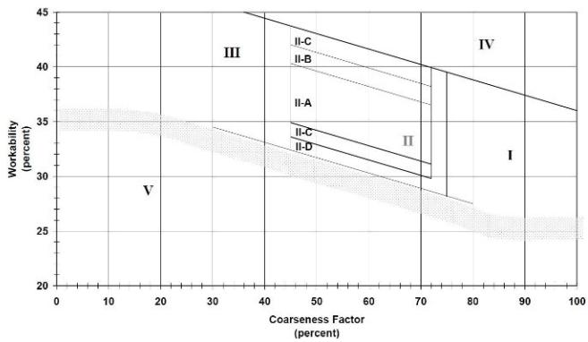

Aggregate Gradation and W/CM Ratio
Aggregate gradation and the water‑to‑cementitious‑materials (w/CM) ratio are the two primary mix‑design levers that dictate concrete pavement behavior. Gradation is the engineered size distribution of coarse, intermediate and fine aggregates—conforming to ASTM C33 and typically positioned in Zone 2 of the Coarseness Factor workability chart—that maximizes particle packing, reduces void space and thus lowers paste demand while improving fresh‑mix workability and long‑term load transfer [2][5]. The w/CM ratio expresses the mass of mixing water divided by the total mass of all cementitious binders and directly controls the thickness of the paste film, governing fluidity, capillary porosity, permeability, strength development and durability, with normal paving mixes targeting values around 0.38–0.45 [1][2]. When a well‑graded aggregate skeleton is paired with an appropriately low w/CM ratio, the mixture achieves sufficient workability for placement, minimizes segregation and air‑void loss, and ultimately delivers a durable pavement capable of resisting traffic loading and environmental exposure [2][5][7].
Sources (19)
Material purpose and applicability
Aggregate gradation is the proportioning of coarse, intermediate and fine aggregates into a well‑graded blend that improves particle packing, enhances workability during mixing, and supports long‑term durability by providing a stable skeleton for load transfer. The engineered distribution minimizes void space, thereby reducing the amount of paste (cement‑water matrix) needed and allowing the aggregate framework to carry loads efficiently; proper gradation also influences air entrainment – air is most easily entrained in concrete that contains increasing amounts of sand in the #100 to #30 sieve range.
The water‑to‑cementitious‑materials (w/cm) ratio defines the proportion of mixing water to all cementitious binders; it controls the mix’s fluidity for placement while governing paste volume, permeability, strength development and ultimately the pavement’s resistance to deterioration over time. A higher w/cm ratio means that there is more free water in the mixture, which assists air entrapment. Across sources, typical w/cm values for normal paving range from about 0.38 to 0.45, with lower ratios used for pervious or slip‑form pavements (e.g., 0.30–0.42) to limit excess water while still providing enough paste to fill inter‑particle voids.
Together, an optimized gradation supplies a dense, well‑packed aggregate skeleton that reduces paste demand, and an appropriate w/cm ratio provides sufficient paste to bind the particles without compromising workability. By controlling these two primary mix‑design variables, the mixture attains the required workability for placement, limits segregation and air‑void loss, and ultimately delivers durable pavement performance under traffic loading and environmental exposure. [2][5][7][8][14][19]
The figure below illustrates how well-graded aggregate maximizes volume by allowing smaller particles to fill voids between larger ones.
 Illustration of aggregate packing efficiency and its effect on void volume. [2]
Illustration of aggregate packing efficiency and its effect on void volume. [2]
The figure displays three beakers containing aggregates with different particle size distributions, ranging from a mix of large and small particles to uniformly sized fine or coarse grains. Below the beakers, graduated cylinders indicate that the mixture with the balanced variety of sizes results in less void space compared to the single-sized aggregates.
[2] — Ch. 6 (p. 189); [5] — Materials (pp. 22–38); [7] — Ch. 4 (pp. 45–47); [8] — Ch. 1 (p. 45); [14] — 2. Factors Influencing Long-Li… (pp. 29–30); [19] — Ch. 3 (p. 22)
Composition and characteristics
The aggregate gradation is defined by the combined size distribution of coarse‑ and fine‑aggregate fractions that satisfy ASTM C33 requirements—fine aggregate must have at least 95 % passing the #4 (4.75 mm) sieve, while intermediate particles typically range from #8 to 3/8 in., and the overall blend may be placed in well‑graded zones such as Zone 2 of the Coarseness Factor and Workability Chart or intentionally gap‑graded with a shortage of midsize particles that raises fines content. Specific aggregate types cited include Class V coarse aggregate (the “V” designation) and, for bridge decks, dolomitic limestone combined with sandstone fine aggregate. The water‑to‑cementitious‑materials (w/cm) ratio quantifies the mass of mixing water relative to all cementitious binders (Portland cement plus any slag or fly‑ash). Conventional paving mixes target a w/cm between 0.40 and 0.45, slip‑form pavements often aim for 0.38–0.42, high‑durability C‑SUD mixes set a target of 0.40 with a maximum of 0.45, and pervious concrete may be as low as 0.30. Lower ratios produce a dense, low‑permeability paste that limits moisture ingress, while higher ratios increase free water, aid air entrainment, and can raise shrinkage potential in gap‑graded blends. [1][2][5][7][8][11][14][15][18]
The relationship between aggregate gradation and workability is illustrated in the modified coarseness factor chart below.
 Modified coarseness factor chart showing aggregate workability zones. [2]
Modified coarseness factor chart showing aggregate workability zones. [2]
The figure displays a graph with the Coarseness Factor on the horizontal axis and the Workability Factor on the vertical axis, divided into five distinct regions labeled I through V. Zone II is identified as an area for concretes with nominal maximum aggregate sizes ranging from 2 in. through ¾ in., while Zone III represents small aggregates and Zone V represents coarse aggregates.
[1] — Ch. 6 (p. 33); [2] — Ch. 6 (p. 189); [5] — Materials (pp. 22–38); [7] — Ch. 4 (pp. 45–47); [8] — Ch. 1 (p. 45); [11] — Ch. 4 (p. 215); [14] — 2. Factors Influencing Long-Li… (pp. 29–30); [15] — 2 Types and Mechanisms of Join… (p. 22); [18] — Pennsylvania Bridge Deck (p. 26)
Across the sources, variations in material composition, source, processing, or proportioning are shown to directly shape both aggregate gradation and the water‑cementitious‑material (w/CM) ratio, which together govern fresh‑state workability and hardened‑state durability. Lowering the w/CM ratio reduces capillary voids in the paste, limits pore connectivity, and therefore cuts concrete permeability while enhancing long‑term performance; conversely, a higher ratio increases free water, aids air entrainment, and can compromise durability. Aggregate gradation further modulates these effects: increasing the proportion of sand sized between #100 and #30 makes air easier to entrain, improving workability but also affecting durability, while a well‑graded blend of aggregates will further ensure long‑term pavement performance. When the aggregate blend is gap‑graded or contains excessive fines, the water demand rises and additional cementitious material is required to meet strength targets, which can increase shrinkage potential and reduce durability. The combined outcome of these adjustments determines permeability, resistance to aggressive agents, and overall structural integrity of the pavement. [1][2][5][7][8][11][14][15][18][19]
The relationship between these factors is illustrated in the figure below, which plots workability against coarseness for combined aggregates.

Workability factor vs. coarseness factor for combined aggregate [1]The figure displays a chart plotting Workability (percent) against Coarseness Factor (percent), divided into five distinct zones labeled I through V. It illustrates the relationship between aggregate gradation and workability, showing that optimized gradations typically lead to a lower w/c ratio.
[1] — Ch. 6 (p. 33); [2] — Ch. 6 (pp. 184–189); [5] — Materials (pp. 22–38); [7] — Ch. 4 (pp. 45–47); [8] — Ch. 1 (p. 45), Ch. 6 (pp. 80–82), Ch. 11 (pp. 108–109); [11] — Ch. 4 (p. 215); [14] — 2. Factors Influencing Long-Li… (pp. 26–30); [15] — 2 Types and Mechanisms of Join… (p. 22); [18] — Pennsylvania Bridge Deck (p. 26); [19] — Ch. 3 (p. 24)
Key material properties
The performance of a concrete mix hinges on the water‑cementitious material (w/cm) ratio because it directly controls permeability and durability; lowering the w/cm to around 0.40–0.45 yields a pavement that is less permeable and more resistant to joint deterioration caused by deicing salts. Maintaining this reduced ratio often requires a low‑ or mid‑range water reducer, which helps achieve the desired physical density without excess water. Consequently, the primary properties governing aggregate gradation and w/cm effectiveness are the mix’s permeability (a physical property) and its durability against chemical attack from salts (a mechanical/chemical property).
The performance of an aggregate gradation together with the water‑cementitious material (w/cm) ratio is governed by a suite of interrelated physical, mechanical, chemical and thermal properties. Physically, a low w/cm ratio limits the size and connectivity of pores in the paste, thereby reducing concrete permeability; this also influences workability, which “is an indication of the ease with which concrete can be transported, placed, compacted, and finished.” The proportion of fine sand and the amount of free water affect air‑entrainment, while aggregates whose pore structure readily absorb water become saturated and are prone to expansive freezing (D‑cracking). Mechanically, low w/cm ratios can increase shrinkage and cracking risk, so mix design must balance permeability benefits against potential volume change stresses; sufficient strength development and aggregate stability are also required for load‑bearing performance. Chemically, reducing the w/cm ratio diminishes the amount of reactive tricalcium aluminate (C3A) and other phases that drive sulfate expansion, a benefit further enhanced by supplementary cementitious materials such as silica fume, fly ash or slag which also lower permeability. Cement alkali content influences the stability of entrained air. Thermally, temperature‑driven phenomena—most notably expansive freezing in calcareous aggregates (“D-cracking is damage that occurs in concrete due to expansive freezing of water in some calcareous aggregate particles”) and the increased demand for air‑entraining admixture at elevated temperatures—must be addressed through aggregate selection, maximum size limits and proper drainage. Together these properties control transport pathways, freeze‑thaw susceptibility, volume change stresses and ease of placement, ultimately dictating the durability and long‑term performance of concrete pavements.
Aggregate gradation and the water‑to‑cementitious material (w/CM) ratio govern a suite of properties that dictate pavement performance. Physically, an “optimised combined aggregate gradation that minimizes voids” reduces paste demand and improves density, while coarser grading preserves strength and modulus compared with fine‑rich mixes that lower relative density. Mechanically, the aggregates must exhibit durability; they “should be resistant to the environment and not prone to D‑cracking, ASR, or ACR,” ensuring that internal stresses do not trigger cracking or deleterious reactions. Chemically, the paste composition—particularly the w/CM ratio and air‑void system—must be tailored to service conditions: “The quality of the paste, including the w/cm ratio and air‑void system, should be selected based on the environment” to control permeability, carbonation, and freeze‑thaw resistance. Thermally, the mix’s coefficient of expansion influences temperature‑induced strains; for recycled‑aggregate concrete this value can be markedly higher: “The coefficient of thermal expansion of concrete made with RCA is approximately 10 percent higher than the original concrete, but in some cases may be as much as 30 percent higher.” Together, these physical, mechanical, chemical and thermal attributes define the durability and structural integrity of concrete pavements. [1][2][5][7][8][11][14][15][18][19]
[1] — Ch. 6 (p. 33); [2] — Ch. 1 (p. 23), Ch. 3 (p. 81), Ch. 6 (pp. 149–189), Ch. 7 (p. 205); [5] — Materials (pp. 22–38); [7] — Ch. 4 (pp. 45–47); [8] — Ch. 1 (p. 45), Ch. 6 (pp. 80–82); [11] — Ch. 4 (p. 215); [14] — 2. Factors Influencing Long-Li… (pp. 26–30); [15] — 2 Types and Mechanisms of Join… (pp. 15–22); [18] — Pennsylvania Bridge Deck (p. 26); [19] — Ch. 3 (pp. 22–24)
Aggregate gradation is measured and classified through several complementary methods. The Tarantula approach provides a numerical grading curve that quantifies particle‑size distribution for proportioning calculations, while sieve analysis performed in accordance with ASTM C33 defines fine aggregate as having “95 percent or more material particles passing the #4 (4.75 mm) sieve” and supplies standard gradation classifications such as No. 67, No. 8, or No. 89; intermediate sizes (#8 to 3/8 in.) may be added to fill gaps in the distribution, and the selected maximum size and shape further influence texture. In addition, the combined aggregate gradation can be expressed by a Coarseness Factor plotted on the Workability Chart, with acceptable mixes required to fall within Zone 2 as specified by ACI 302.1R‑04 guidance. The water‑to‑cementitious‑materials (w/cm) ratio is derived from mass measurements: it is calculated by dividing the weight of mixing water by the total weight of cement plus any supplementary cementitious materials, and expressed per unit volume of concrete using each material’s specific gravity (“Concrete mixture proportions are usually expressed on the basis of the mass of ingredients per unit volume”). Typical values for normal paving mixes range from 0.40 to 0.45, slip‑form pavements target 0.38–0.42, and pervious concrete aims near 0.30 (with acceptable ranges up to about 0.34–0.40 when admixtures are used). [2][5][14]
The following figure illustrates an example of a coarseness and workability factor chart used to evaluate these aggregate properties.
 Example Coarseness and Workability Factor Chart [14]
Example Coarseness and Workability Factor Chart [14]
The figure displays a chart plotting the workability factor against the coarseness factor to classify aggregate gradation into five distinct zones. Zone II is labeled as “Optimal” and represents the target area for combined aggregate gradation in slipform pavements, which must fall within this zone to ensure proper mixture performance. The chart visually defines acceptable limits for workability relative to coarseness, distinguishing between mixes that are too fine (Zone IV), gap-graded (Zone I), optimal (Zone II), or too coarse (Zone V).
[2] — Ch. 7 (p. 210); [5] — Materials (pp. 22–38); [14] — 2. Factors Influencing Long-Li… (pp. 29–30)
Behavior and mechanisms
The guides agree that a “low water‑cementitious materials ratio creates a paste system with few connected pores” which “gives the pavement low permeability.” This low permeability “helps limit the ingress of moisture and de‑icing chemicals” and therefore “reduces joint deterioration” while also “curtails the formation of expansive sulfate crystals,” providing resistance to freeze‑thaw damage, alkali‑silica reaction, and chemical attack. When the w/cm ratio is kept near the target of 0.40–0.45, the mix “provides a more durable concrete pavement with lower permeability than conventional Class C mix due to its lower w/c ratio.” Conversely, when aggregate gradation is gap‑graded or contains higher proportions of fines, “the blend tends to segregate and contains a higher proportion of fines,” which “forces the mixture to demand additional water and cementitious material” and thus “raises the effective w/cm ratio,” making the hardened concrete “more prone to shrinkage” and “reducing its long‑term durability under service conditions such as loading and moisture exposure.” An “optimized combined aggregate gradation that minimizes voids and thus the paste requirement, resulting in minimal cement and water required” allows the mix to retain “sufficient strength under loading” while using less binder. However, mixes with recycled‑aggregate fines exhibit “wetting and drying shrinkage … 20 to 50 percent higher … when it contains coarse RCA and natural sand, and 70 to 100 higher shrinkage when it contains both coarse and fine RCA,” leading to greater moisture‑induced strains, and the coefficient of thermal expansion can be “approximately 10 percent higher than the original concrete… as much as 30 percent higher,” amplifying temperature‑induced strains and creep. A ternary bridge‑deck concrete with measured w/cm ratios of 0.50–0.46 “achieved a visual rating of 2” after “50 freeze‑thaw cycles,” indicating acceptable performance despite a slightly higher ratio. Overall, the behavior under loading, moisture, temperature cycling, and chemical exposure is governed by the interplay of aggregate gradation and w/cm ratio: low ratios and well‑graded aggregates promote durability, while poor gradation or elevated ratios increase susceptibility to shrinkage, segregation, and chemical degradation. [1][2][8][15][18][19]
[1] — Ch. 6 (p. 33); [2] — Ch. 6 (pp. 186–193); [8] — Ch. 1 (p. 45), Ch. 6 (pp. 80–82); [15] — 2 Types and Mechanisms of Join… (p. 22); [18] — Pennsylvania Bridge Deck (p. 26); [19] — Ch. 3 (p. 24)
Physical mechanisms dominate the way aggregate gradation and the water‑to‑cementitious‑material (w/CM) ratio govern concrete behavior. A well‑graded blend of coarse and fine particles creates a dense particle skeleton that reduces internal voids, improves fresh‑mix workability, and limits pathways for fluid ingress; in pervious mixes a narrow coarse gradation combined with limited fines defines the intended void structure and surface texture. By contrast, gap‑graded aggregates leave discontinuous size distributions that promote segregation and increase the water demand needed to coat the larger particles. The w/CM ratio directly controls the thickness of the paste film surrounding the aggregate framework: lowering the ratio reduces capillary pore volume and interconnectivity, producing a denser paste with lower permeability, while higher ratios provide more free water that eases particle lubrication but also raises capillary porosity and susceptibility to shrinkage. Finer sand fractions raise aggregate surface area, which lowers the required paste volume and encourages air‑entrainment; increasing total sand content likewise reduces the amount of paste that must be protected by entrained air.
Chemical mechanisms operate through the composition of the paste and any admixtures. Water‑reducing agents modify surface tension and disperse cement grains so that comparable flow can be achieved with less water, though they may increase segregation risk if not carefully proportioned. Supplementary cementitious materials refine the pore structure and further limit connectivity, while the air‑void system must be designed for the exposure environment to control durability concerns such as de‑icing salt ingress.
Mechanical mechanisms involve how the mix is consolidated, cured, and vibrated. Proper placement sequence and the mixture’s response to vibration—assessed with tools like the vibrating Kelly ball or Box Test—determine the degree of compaction, retention of entrained air, and avoidance of segregation. Adequate curing densifies the matrix and strengthens the paste‑aggregate interface, while spherical fly ash particles act as micro‑ball bearings that lower internal friction. Together, these physical packing effects, chemical paste modifications, and mechanical handling actions dictate the fresh workability, long‑term permeability, strength, and durability of concrete pavements. [1][2][5][7][8][13][14][15][19]
[1] — Ch. 6 (p. 33); [2] — Ch. 6 (pp. 184–189); [5] — Materials (pp. 22–38); [7] — Ch. 4 (pp. 45–47); [8] — Ch. 1 (p. 45), Ch. 6 (pp. 80–82); [13] — Ch. 6 (p. 58); [14] — 2. Factors Influencing Long-Li… (pp. 29–30); [15] — 2 Types and Mechanisms of Join… (p. 22); [19] — Ch. 3 (p. 22)
Durability and deterioration
The aggregate gradation and the water‑cementitious material (w/cm) ratio are the dominant controls on concrete pavement durability. A well‑graded skeleton reduces voids, limits paste demand, and permits a lower w/cm; conversely, gap‑graded or poorly graded aggregates increase fines, raise the effective w/cm, and promote segregation, loss of entrained air, and higher shrinkage susceptibility. While a conventional Class C concrete has a target w/c ratio of 0.43 and max of 0.488, the C‑SUD mix has a target of 0.40 and max of 0.45. Low w/cm values produce a dense paste with reduced permeability but also elevate drying shrinkage and cracking potential; low permeability is best achieved using low water/cementitious materials (w/cm) ratio values, which may also lead to increasing shrinkage and cracking risk. High w/cm ratios generate a percolated pore network that allows chlorides, sulfates, and moisture to penetrate, initiating chemical attack, reinforcement corrosion, freeze‑thaw damage, and related deterioration mechanisms; A high water‑cementitious material (w/cm) ratio creates more connected pores in the paste, which raises concrete permeability and allows aggressive fluids to infiltrate the matrix; this fluid ingress is a primary durability concern because it can trigger chemical attack, corrosion of reinforcement, freeze‑thaw damage, and other deterioration processes. The aggregate itself can be a source of damage: D‑cracking is a type of deterioration caused by expansive freezing of water trapped inside some types of aggregate particles. Excessive paste volume—often caused by using small top‑size aggregates to delay D‑cracking—increases shrinkage and compromises long‑term performance. Air entrainment, facilitated by fine sand and higher w/cm ratios, must be balanced because air contents above about 6 % reduce strength while insufficient air voids diminish freeze‑thaw resistance. Overall, controlling gradation and maintaining an optimized w/cm ratio—typically around 0.40–0.45 for high‑durability mixes—mitigates permeability‑controlled deterioration, limits shrinkage‑related cracking, and reduces the risk of D‑cracking, alkali‑aggregate reactions, and reinforcement corrosion. [1][2][5][8][11][14][15][18][19]
The following figure illustrates how increasing coarse aggregate size reduces the required cementitious content.
 Reduction of cementitious content with increasing coarse aggregate size (based on ACI 211) [8]
Reduction of cementitious content with increasing coarse aggregate size (based on ACI 211) [8]
The figure displays a bar chart showing that the required cementitious content decreases as the nominal maximum size of the coarse aggregate increases.
[1] — Ch. 6 (p. 33); [2] — Ch. 1 (p. 23), Ch. 3 (pp. 57–81), Ch. 6 (pp. 184–193), Ch. 7 (p. 205); [5] — Materials (pp. 22–23); [8] — Ch. 1 (p. 45), Ch. 6 (pp. 80–82), Ch. 11 (pp. 108–109); [11] — Ch. 4 (p. 215); [14] — 2. Factors Influencing Long-Li… (pp. 26–27); [15] — 2 Types and Mechanisms of Join… (pp. 15–22); [18] — Pennsylvania Bridge Deck (p. 26); [19] — Ch. 3 (pp. 22–24)
The guides agree that a low water‑cementitious material (w/cm) ratio—typically 0.40–0.45—“provides a more durable concrete pavement with lower permeability than conventional Class C mix due to its lower w/c ratio” and “low permeability (low w/cm ratio of about 0.40)” is the primary means of reducing susceptibility to moisture‑driven distress. Maintaining such ratios often requires chemical control, as “To maintain the lower w/c ratio, a low- or mid-range water reducer may be necessary.” In freeze‑thaw environments the guides stress that “in freezethaw environments, the concrete will need to have a properly entrained air‑void system and a relatively low w/cm ratio (0.40 to 0.45 is considered good for most applications).” A well‑designed air void system—“maintaining a proper air‑void system to provide space for freezing and expanding water to move into” and, under severe exposure, “For concrete that is exposed to deicing chemicals or high water saturation (which is considered “severe exposure”), … recommends a minimum of 5 percent to 8 percent air content”—further lowers deterioration risk.
Aggregate characteristics are equally decisive. The guides note that “using durable aggregates,” “Using sound aggregate,” and “A well‑graded blend of aggregates will further ensure long‑term pavement performance.” Optimized gradation “Ideally a concrete paving mixture will use an optimized combined aggregate gradation that minimizes voids and thus the paste requirement, resulting in minimal cement and water required,” which helps keep the w/cm ratio low. The presence of sufficient sand (“Air is most easily entrained in concrete that contains increasing amounts of sand in the #100 to #30 sieve range”) aids air‑entrainment. Conversely, “Gap‑graded aggregates” that “Contain higher amounts of fines,” “Require more water,” and “Require more cementitious material to meet strength requirements” “Increase susceptibility to shrinkage” and “Limit long‑term performance.” Aggregates that are prone to D‑cracking, ASR or ACR are discouraged: “Aggregates should be resistant to the environment and not prone to D-cracking, ASR, or ACR.”
Supplementary cementitious materials (SCMs) are repeatedly cited as durability enhancers. The guides state that “low permeability (i.e., low w/cm ratios and the use of SCMs) and a proper air void system will result in good long‑term concrete performance,” and that “use of fly ash and slag” and “Supplementary cementitious materials also increase the concrete resistivity.” Reducing the w/cm ratio (“Reducing the w/cm”) together with appropriate SCM dosages (“Use of appropriate amounts of supplementary cementitious materials”) and extended curing (“Allowing hydration to continue for as long as possible, i.e. curing”) “reduces cracking” and limits pore connectivity.
Exposure conditions that amplify deterioration are also identified. High water saturation or deicing chemicals constitute “severe exposure,” demanding higher air content and low permeability: “higher durability is desired to reduce joint deterioration due to the use of deicing chemicals.” Freeze‑thaw cycles, wet–dry sulfate cycles, and moisture fluctuations increase risk: “Moisture is a key factor associated with alkali‑silica reactivity (ASR) and freeze‑thaw damage to pavements,” and “As the use of deicing solutions applied to pavements increases, low‑permeability mixtures become even more important.” Poor workability can lead to segregation: “Workability of a mixture is a function of the materials: aggregate gradation, water‑cementitious materials (w/cm) ratio, air content, admixtures, and cementitious chemistry,” and “Segregation can reduce permeability, reduce strength, and increase shrinkage.” [1][2][5][8][11][14][15][19]
[1] — Ch. 6 (p. 33); [2] — Ch. 2 (p. 39), Ch. 3 (pp. 57–81), Ch. 6 (pp. 184–193); [5] — Materials (pp. 22–23); [8] — Ch. 1 (p. 45), Ch. 6 (pp. 80–82); [11] — Ch. 4 (p. 215); [14] — 2. Factors Influencing Long-Li… (pp. 26–27); [15] — 2 Types and Mechanisms of Join… (p. 22); [19] — Ch. 3 (pp. 22–24)
Material interactions and compatibility
The interaction between aggregate gradation and the water‑to‑cementitious‑material (w/CM) ratio governs how the binder, admixtures, and any supplementary constituents behave within a concrete mix. A lower w/CM ratio reduces the permeability of the paste, which in turn enhances pavement durability; this effect is noted when mixes achieve “more durable concrete pavement with lower permeability than conventional Class C mix due to its lower w/c ratio.” Because gradation determines the proportion of coarse and fine particles, it also controls how readily air‑entraining agents can introduce bubbles: “Air is most easily entrained in concrete that contains increasing amounts of sand in the #100 to #30 sieve range.” When the aggregate skeleton is optimized to fill fewer voids, the paste demand drops, allowing the mix to meet strength and workability targets with “optimized combined aggregate gradation that minimizes voids and thus the paste requirement, resulting in minimal cement and water required.” Finally, the presence of fibers adds a further material interaction; in thin overlays “the addition of macrofibers may require adjustment of the paste content to ensure adequate fiber dispersion and to facilitate finishing and texturing,” linking gradation‑controlled paste volume directly to fiber‑matrix bond quality. [1][2][5][7][8][13][14][15][19]
[1] — Ch. 6 (p. 33); [2] — Ch. 6 (p. 189), Ch. 7 (p. 210); [5] — Materials (pp. 22–38); [7] — Ch. 4 (pp. 45–47); [8] — Ch. 1 (p. 45), Ch. 6 (pp. 80–82), Ch. 11 (pp. 108–109); [13] — Ch. 6 (p. 58); [14] — 2. Factors Influencing Long-Li… (pp. 29–30); [15] — 2 Types and Mechanisms of Join… (p. 22); [19] — Ch. 3 (pp. 22–24)
The guides identify several compatibility risks when aggregate gradation is paired with a given water‑cementitious material ratio. Reactive aggregates that can trigger alkali‑silica reaction (ASR) and coarse aggregates prone to freeze‑thaw D‑cracking limit the feasible w/cm range. In sulfate‑exposed conditions, low w/cm mixes become especially vulnerable because sulfates react with hydrated C3A products, forming expansive crystals that crack the hardened paste. The use of recycled concrete aggregate introduces additional risk: attached old mortar provides a water pathway when the new mix’s w/cm is lower than that of the source material, raising permeability. Moreover, higher carbonation rates—up to roughly two‑thirds greater than conventional concrete—combined with reduced w/cm ratios accelerate steel corrosion, particularly in the presence of chlorides. Excessive shrinkage can also arise from increased paste volume or from gap‑graded blends that demand extra water and binder, restraining movement and degrading long‑term performance. The guides do not highlight further compatibility concerns related to organics, clays, contaminants, dissimilar materials, or other chemical attacks beyond those noted. [2][8][15]
[2] — Ch. 3 (pp. 57–58), Ch. 6 (p. 193); [8] — Ch. 6 (pp. 80–82); [15] — 2 Types and Mechanisms of Join… (p. 22)
Influence of production and placement
The guides stress that the water‑cementitious material ratio must be kept within design limits because any practice that changes the actual water content during mixing or placement directly influences durability. Slip‑form paving tends to produce a water‑cement ratio lower than the design value, which further reduces permeability and helps resist joint deterioration caused by de‑icing salts, but it also requires the use of a low‑or mid‑range water reducer to keep the ratio within the intended range. Maintaining this lower w/c through proper mixing, placement, and admixture control yields a denser concrete that is less prone to moisture ingress and joint damage. Workability is an indication of the ease with which concrete can be transported, placed, compacted, and finished, and good workability means that the concrete mixture can be readily consolidated and finished. Some mixtures lose air during transport from the plant to the site and during placement. Therefore, it is recommended that air be checked before and after placement to ensure that the target air content is met. Water should not be added to concrete on‑site unless this can be done without exceeding the water/cementitious materials (w/cm) ratio of the mix design. Water should not be added to a concrete mixture to adjust workability or finishing properties unless this can be done without exceeding the water‑cementitious materials ratio of the mixture design. Proper consolidation during placement and adequate curing limit the formation of interconnected pores; low porosity reduces permeability and enhances durability for a given w/c ratio and aggregate gradation. If there is a large number of pores and they are connected (percolated), the concrete will be permeable. Allowing hydration to continue for as long as possible, i.e., curing, further lowers paste permeability. Using gap‑graded aggregates makes the mix prone to segregation during mixing and forces the use of extra water and cementitious material to reach strength targets, which raises the effective w/cm ratio and heightens shrinkage susceptibility, thereby limiting long‑term performance. If air loss exceeds about 2 % between the front and rear of the paver, the admixture dosage should be adjusted to retain adequate air void spacing and protect the concrete under severe exposure. Proper compaction and finishing that preserve the designed air content help maintain durability. In slip‑form pavements the w/cm should be between 0.38 and 0.42 as this is the primary parameter that controls hardened mixture performance; deviations can be mitigated by careful mixing, placement, continuous compaction (e.g., conveyor belt and form‑riding paver) and curing. Even when measured w/cm ratios are slightly above design (e.g., 0.50 and 0.46), achieving the required slump and air content, combined with ambient curing conditions that maintain high relative humidity, can offset modest deviations and still yield acceptable freeze‑thaw resistance. Workability of a mixture is a function of the materials: aggregate gradation, water‑cementitious materials (w/cm) ratio, air content, admixtures, and cementitious chemistry all influence the workability. Excessive vibration of these stiff mixtures can lead to segregation and loss of entrained air, compromising the intended gradation and increasing shrinkage. Low‑permeability mixtures are associated with low w/cm, addition of supplementary cementitious materials, and excellent curing practices that promote higher levels of cement hydration. [1][2][14][15][18][19]
[1] — Ch. 6 (p. 33); [2] — Ch. 6 (pp. 149–189); [14] — 2. Factors Influencing Long-Li… (pp. 25–30); [15] — 2 Types and Mechanisms of Join… (p. 22); [18] — Pennsylvania Bridge Deck (p. 26); [19] — Ch. 3 (pp. 22–24)
The guides agree that any construction action that raises the water‑cementitious materials (w/cm) ratio above its design value is among the most damaging defects. They repeatedly state, “Water should not be added to concrete on-site unless this can be done without exceeding the water/cementitious materials (w/cm) ratio of the mix design,” and similarly caution that “water should not be added … unless this can be done without exceeding the water‑cementitious materials ratio of the mixture design.” When excess water is introduced, workability changes signal a shift in raw‑material proportions, as noted by the observation that “Changes in workability indicate that the raw materials, proportions, or environment are changing.” Elevated w/cm ratios—whether 0.46–0.50 instead of a designed 0.41, or values above the recommended 0.38–0.42 for slip‑form pavements—reduce paste quality, increase porosity, and accelerate durability loss.
Equally critical is adherence to the specified aggregate gradation. The sources require that “coarse aggregate is kept to a narrow gradation,” that “combined aggregate gradation should fall within Zone 2 of the Coarseness Factor and Workability Chart,” and that “Using sound aggregate” is essential. Deviations such as using gap‑graded blends, oversized particles, or aggregates prone to freeze‑thaw expansion create internal stresses (“D‑cracking … expands upon freezing”) and disrupt particle packing, leading to higher voids and lower strength. The guides note that gap‑graded aggregates “segregate easily,” “require more water,” and “increase susceptibility to shrinkage.”
Additional construction‑induced variations amplify these effects. In recycled‑aggregate mixes, keeping RCA fines below roughly 25 % preserves strength; exceeding this limit “strength generally decreases with increased fines” and, when combined with a lower new w/cm ratio than the original concrete, “the permeability … is highly affected.” Over‑vibration of stiff mixes “can lead to segregation and loss of entrained air,” which “reduces permeability, reduces strength, and increases shrinkage,” while also diminishing freeze‑thaw durability. Finally, inadequate consolidation and curing—summarized by the directive to “ensure adequate consolidation and curing”—allow a network of connected pores that further accelerates deterioration. [2][5][8][14][15][18][19]
[2] — Ch. 6 (pp. 149–188); [5] — Materials (p. 38); [8] — Ch. 6 (pp. 80–82); [14] — 2. Factors Influencing Long-Li… (pp. 25–30); [15] — 2 Types and Mechanisms of Join… (pp. 15–22); [18] — Pennsylvania Bridge Deck (p. 26); [19] — Ch. 3 (p. 22)
Selection, specification, and improvement
The guides agree that the selection of aggregate gradation and the water‑cementitious‑materials (w/CM) ratio is driven first by the performance targets for the pavement—strength, durability, permeability, resistance to freeze‑thaw or chemical attack, and the workability required for the chosen placement method. Aggregate choices must satisfy durability requirements; the guides stress “choosing aggregates that are not susceptible to freeze‑thaw deterioration” and limit maximum particle size when marginal aggregates are used. A well‑graded blend is preferred because “A well‑graded blend of aggregates will further ensure long‑term pavement performance.” The gradation should provide adequate drainage, appropriate sand content for air entrainment, and avoid gap‑graded mixes that increase fines and water demand.
The w/CM ratio is specified as low as feasible while still meeting strength and workability. All sources recommend reducing the ratio: “Reduce the w/cm ratio as low as is consistent with other requirements of the concrete, including cracking.” Specific applications have tighter limits; for slip‑form pavements the guides set “w/cm should be between 0.38 and 0.42 for slipform pavements as this is the primary parameter that controls hardened mixture performance.” When additional slump or air‑entrainment is needed, admixtures may be used rather than raising the ratio.
Cost, material availability, and sustainability also influence the final specification; designers balance local aggregate gradations, cementitious content, and possible supplementary cementitious materials to achieve the target performance within economic constraints. Final specifications may be prescriptive (minimum/maximum limits) or performance‑based, requiring trial mixes to verify that the chosen gradation and w/CM ratio satisfy the defined durability and workability criteria. [1][2][5][7][8][11][13][14][15][19]
[1] — Ch. 6 (p. 33); [2] — Ch. 1 (p. 23), Ch. 2 (p. 39), Ch. 6 (pp. 184–189), Ch. 7 (pp. 205–210); [5] — Materials (pp. 22–38); [7] — Ch. 4 (pp. 45–47); [8] — Ch. 1 (p. 45), Ch. 6 (pp. 80–82), Ch. 11 (pp. 108–109); [11] — Ch. 4 (p. 215); [13] — Ch. 6 (p. 58); [14] — 2. Factors Influencing Long-Li… (pp. 26–30); [15] — 2 Types and Mechanisms of Join… (pp. 15–22); [19] — Ch. 3 (p. 22)
To raise the performance of aggregate gradation and the water‑cementitious‑materials (w/CM) ratio, the guides recommend a coordinated set of actions.
Aggregate grading and selection – Use sound, well‑graded aggregates and limit the maximum size of any reactive coarse aggregate. When marginal aggregates are unavoidable, employ smaller top‑sized particles to postpone D‑cracking; as one source notes, “Small top-sized coarse aggregates, selected to delay D-cracking.” Adding an intermediate fraction further improves packing: “Achieving a well‑graded aggregate supply can often be attained by adding an intermediate (#8 to 3/8 in. [2.36 to 9.5 mm]) aggregate.” The overall goal is an optimized combined gradation that minimizes voids, thereby reducing paste demand: “Ideally a concrete paving mixture will use an optimized combined aggregate gradation that minimizes voids and thus the paste requirement, resulting in minimal cement and water required.”
Durability‑oriented aggregate choice – Select aggregates that are resistant to freeze–thaw damage, alkali‑silica reaction (ASR) and alkali‑carbonate reaction (ACR): “Aggregates should be resistant to the environment and not prone to D-cracking, ASR, or ACR.” When using recycled concrete aggregate, limit fines to less than about 25 % of total aggregate so that strength remains comparable: “if the substitution of RCA fines is restricted to less than approximately 25 percent, the strength of the RCA concrete will be similar to that of new concrete made with natural aggregate.”
Supplementary cementitious materials (SCMs) and ternary blends – Replace at least 30 % of Portland cement with high‑quality SCMs such as silica fume, Class F fly ash, slag or natural pozzolans. For sulfate‑resistant mixes, ensure slag makes up the majority of binder: “Silica fume, fly ash, natural pozzolans, and slag cement can improve the resistance of concrete to external sulfate attack.” A typical ternary system cited is: “The cementitious system comprised 60 percent Type I/II cement, 30 percent Grade 100 slag cement, and 15 percent Class F fly ash.”
Target w/CM ratio – Aim for a relatively low ratio; the guides converge on values between 0.38 and 0.45: “The C‑SUD mix has a target of 0.40 and max of 0.45.”, “relatively low w/cm ratio (0.40 to 0.45 is considered good for most applications)”, and “w/cm should be between 0.38 and 0.42 for slipform pavements as this is the primary parameter that controls hardened mixture performance.” Maintaining workability at these low water levels requires admixtures: “To maintain the lower w/c ratio, a low- or mid-range water reducer may be necessary.”, “Water-reducing admixtures are used to reduce w/cm ratios while improving workability.”, and when higher ratios are unavoidable, a retarder can extend setting time: “An MBVR air entraining agent, Glenium 3030 water reducer, and 100XR retarder were used as chemical admixtures.”
Air‑entrainment for freeze–thaw environments – Provide an air‑void system of 5 %–8 % air with a spacing factor ≤0.008 in.: “minimum of 5 percent to 8 percent air content”, “spacing factor equal to or below 0.008 in.” Monitor fresh‑mix air before and after placement; if the difference exceeds 2 %, adjust admixture dosage: “If the difference is greater than 2% then admixture dosage of the mixture should be adjusted.” The guides also allow modest increases in entrained air within specification limits: “Increase in the entrained air content (within specification).” Proper sand content in the #100‑#30 range and non‑Vinsol resin agents are recommended to produce finer, uniformly spaced bubbles.
Quality control and testing – Define clear minimum/maximum limits for aggregate grading, SCM replacement rates, w/CM ratio and air content. Test each aggregate source and reject material that fails gradation or reactivity criteria. Verify water addition, monitor consolidation, and ensure adequate curing to allow continued hydration: “Allowing hydration to continue for as long as possible, i.e. curing.” Use trial batches (laboratory or field) and confirm performance with slump, air‑content, and microwave w/CM measurements: “An MBVR air entraining agent, Glenium 3030 water reducer, and 100XR retarder were used as chemical admixtures.”
Additional considerations – Incorporate macrofibers in thin overlays only after adjusting paste content to maintain workability. Use the largest practical nominal maximum aggregate size consistent with placement constraints to further cut cement demand: “Combined aggregate gradation should fall within Zone 2 of the Coarseness Factor and Workability Chart.”
By applying these modifications, additives, alternative materials, and rigorous controls, the performance of aggregate gradation and the w/CM ratio can be substantially improved while mitigating known durability weaknesses. [1][2][5][7][8][11][13][14][15][18][19]
[1] — Ch. 6 (p. 33); [2] — Ch. 1 (p. 23), Ch. 2 (p. 39), Ch. 3 (pp. 57–81), Ch. 6 (pp. 184–193), Ch. 7 (p. 205); [5] — Materials (pp. 22–38); [7] — Ch. 4 (pp. 45–47); [8] — Ch. 1 (p. 45), Ch. 6 (pp. 80–82), Ch. 11 (pp. 108–109); [11] — Ch. 4 (p. 215); [13] — Ch. 6 (p. 58); [14] — 2. Factors Influencing Long-Li… (pp. 26–30); [15] — 2 Types and Mechanisms of Join… (pp. 15–22); [18] — Pennsylvania Bridge Deck (p. 26); [19] — Ch. 3 (p. 24)
Performance evaluation and implications
Across the guides, laboratory evaluation of aggregate gradation and water‑cementitious material ratio begins with standard consistency tests—slump (ASTM C143/AASHTO T 119) and compactability tests such as the box and vibrating Kelly methods (AASHTO PP 84, AASHTO TP 129)—to verify workability. The selected gradation is then checked against the Coarseness Factor and Workability Chart, requiring placement in Zone 2. Field evidence relies on trial mixes prepared in laboratory or at the plant; full‑scale batch and handling‑plant trials are conducted under expected placement temperatures to confirm that the mixture will satisfy workability, strength, and durability requirements before construction. Long‑term performance is demonstrated by subjecting cured specimens to freeze–thaw cycling per ASTM C672, with visual ratings used to assess resistance. [2][7][14][18]
The following figure illustrates how aggregate gradation influences workability relative to paste content.
 Effect of aggregate gradation on workability as a function of paste content [2]
Effect of aggregate gradation on workability as a function of paste content [2]
The figure plots the V-Kelly Index, a measure of concrete workability, against varying levels of paste content for three distinct aggregate gradations.
[2] — Ch. 6 (p. 149), Ch. 7 (pp. 205–210); [7] — Ch. 4 (pp. 45–47); [14] — 2. Factors Influencing Long-Li… (pp. 29–30); [18] — Pennsylvania Bridge Deck (p. 26)
The aggregate gradation and the water‑cementitious materials (w/cm) ratio are identified across the guides as the two primary levers that govern concrete pavement performance from fresh‑mix handling through long‑term service. A low w/cm ratio densifies the paste, cuts capillary porosity and therefore achieves “low permeability is best achieved using low water/cementitious materials (w/cm) ratio values”. Values in the range of 0.40–0.45 are repeatedly cited as “relatively low w/cm ratio (0.40 to 0.45 is considered good for most applications)” and even lower ratios such as about 0.38‑0.42 are prescribed for slip‑form pavements (“w/cm should be between 0.38 and 0.42 for slipform pavements as this is the primary parameter that controls hardened mixture performance”). “Reducing the w/cm.” directly limits moisture, chloride and sulfate ingress, which “greatly reduced… corrosion of embedded metals in concrete … with low permeability (low w/cm ratio of about 0.40) and sufficient concrete cover” and also mitigates alkali‑silica reaction and freeze‑thaw damage (“Moisture is a key factor associated with alkali‑silica reactivity (ASR) and freeze‑thaw damage to pavements. Thus, a pavement with low permeability will be more resistant to ASR and freeze‑thaw distresses.”).
Maintaining such low ratios during placement often requires chemical assistance; the guides note that “To maintain the lower w/c ratio, a low- or mid-range water reducer may be necessary” and that “Water-reducing admixtures can provide an increase in the workability of the mixture without increasing the water or paste content”. Workability is described as “an indication of the ease with which concrete can be transported, placed, compacted, and finished”, and it must be sufficient to meet construction tolerances while staying at or below the specified w/cm (“PEMs should be workable enough to allow efficient construction at or below the maximum w/cm as determined during the mixture qualification stage.”).
Aggregate gradation influences both fresh‑mix behavior and hardened performance. “Aggregates strongly influence concrete’s fresh properties (particularly workability) and long‑term durability”, and a “well‑graded blend will further ensure long‑term pavement performance”. Proper grading maximizes particle packing, minimizes voids and paste demand (“Ideally a concrete paving mixture will use an optimized combined aggregate gradation that minimizes voids and thus the paste requirement, resulting in minimal cement and water required”), and provides the sand content needed for air entrainment (“Air is most easily entrained in concrete that contains increasing amounts of sand in the #100 to #30 sieve range”). Selecting smaller maximum coarse‑aggregate sizes can “delay D-cracking” but also raises paste volume and drying shrinkage (“Small top-sized coarse aggregates, selected to delay D-cracking, will likely reduce load transfer at joints and cracks (critical for CRCP) and increase paste volume, thus increasing drying shrinkage.”).
Conversely, gap‑graded or fine‑rich mixes tend to “Segregate easily”, “Contain higher amounts of fines”, “Require more water” and consequently exhibit an “Increase susceptibility to shrinkage”. These effects can degrade durability if not compensated by mix adjustments.
For slip‑form applications the combined gradation is required to fall within a defined workability window (“Combined aggregate gradation should fall within Zone 2 of the Coarseness Factor and Workability Chart”), ensuring adequate compaction without segregation. When recycled concrete aggregate is used, maintaining low fines (<≈25 %) preserves strength (“if the substitution of RCA fines is restricted to less than approximately 25 percent, the strength of the RCA concrete will be similar to that of new concrete made with natural aggregate”), but the “permeability of concrete made with RCA is highly affected by the water‑to‑cementitious material (w/cm) ratios of both the original and new concrete”, influencing shrinkage and modulus.
Construction practices must control on‑site water addition (“Water should not be added to concrete on-site unless this can be done without exceeding the water/cementitious materials (w/cm) ratio of the mix design”) and employ appropriate admixtures to achieve the target workability. When these parameters are balanced, the resulting pavement “provides a more durable concrete pavement with lower permeability than conventional Class C mix due to its lower w/c ratio”, leading to reduced joint maintenance, lower corrosion risk, and extended service life. [1][2][5][7][8][11][13][14][15][18][19]
[1] — Ch. 6 (p. 33); [2] — Ch. 1 (p. 23), Ch. 2 (p. 39), Ch. 3 (pp. 57–81), Ch. 6 (pp. 149–193), Ch. 7 (p. 205); [5] — Materials (pp. 22–38); [7] — Ch. 4 (pp. 45–47); [8] — Ch. 1 (p. 45), Ch. 6 (pp. 80–82); [11] — Ch. 4 (p. 215); [13] — Ch. 6 (p. 58); [14] — 2. Factors Influencing Long-Li… (pp. 26–30); [15] — 2 Types and Mechanisms of Join… (p. 22); [18] — Pennsylvania Bridge Deck (p. 26); [19] — Ch. 3 (pp. 22–24)
References
- Guide to the Prevention and Restoration of Early Joint Deterioration in Concrete Pavements (2016) [link]
- Integrated Materials and Construction Practices for Concrete Pavement: A State-of-the-Practice Manual (2nd edition IMCP Manual, 2019) [link]
- Best Practices Manual: Quality Control and Quality Acceptance of Concrete Airport Pavement [link]
- Guide to Full-Depth Reclamation (FDR) with Cement (2017, reprinted 2019) [link]
- Guide to Cement-Based Integrated Pavement Solutions (2011) [link]
- Guide for Partial-Depth Repair of Concrete Pavements (2012) [link]
- Quality Control for Concrete Paving: A Tool for Agency and Industry (Optimized for fast web viewing–2021) [link]
- Sustainable Concrete Pavements: A Manual of Practice (2012) [link]
- Commentary on AASHTO R 101, Developing Performance Engineered Concrete Pavement Mixtures (Optimized for fast web viewing–2024) [link]
- Concrete Overlay Repair and Replacement Strategies (Guide–Optimized for fast web viewing–2024) [link]
- Guide for Concrete Pavement Distress Assessments and Solutions: Identification, Causes, Prevention, and Repair (Distress Manual–2018) [link]
- Guide to Cement-Stabilized Subgrade Soils (2020) [link]
- Guide to Concrete Overlays (4th Edition–Optimized for fast web viewing–2021) [link]
- Field Reference Manual for Quality Concrete Pavements (2012) [link]
- Guide for Optimum Joint Performance of Concrete Pavements (Optimized for fast web viewing–2012) [link]
- Concrete Pavement Preservation Workshop Reference Manual (2008) [link]
- Implementation of Best Practices for Concrete Pavements: Guidelines for Specifying and Achieving Smooth Concrete Pavements (2019) [link]
- The Use of Ternary Mixtures in Concrete (Manual–2014) [link]
- Testing Guide for Implementing Concrete Paving Quality Control Procedures (2008) [link]